Footprints 操作ガイド
こんにちは、Footprints へようこそ！このガイドでは、アプリの使い方を一歩ずつご案内します。一度に全部読む必要はありません。やりたいことが出てきたら、下の目次からそのページに移動してください。
- ① 行った場所を自動で記録「先週の水曜日、どこに行ったんだっけ」と思い出せないことはありませんか？自動記録をオンにすると、滞在した場所や移動のようすが自動で「タイムライン」に並びます。手動でチェックインする必要はありません。
- ② データはあなたの iPhone の中だけ位置情報がアップロードされないか心配ですか？Footprints にはアカウントもクラウドもなく、記録はこの iPhone にだけ保存されます。バックアップするかどうか、誰に渡すかは、すべてあなたが決められます。
- ③ 足あとを思い出に旅行から帰っても整理が面倒…という方へ。数日分の足あとを、ワンタップでひとつの「旅行」にまとめられます。「振り返り」では、よく行く場所や移動した距離をグラフで見られます。
- 自動記録を始める
- 「タイムライン」で1日の足あとを見る
- 記録を手動で追加・修正する
- 「足あと」の地図で行った場所を見る
- 場所を追加・整理する
- 「旅行」を作成・整理する
- 「振り返り」で統計を見る
- バックアップと復元
- フル版のロック解除と購入の復元
- 外観と表示方法を変更する
- よくある質問
主な機能の操作手順
画面のいちばん下に、「タイムライン」「足あと」「振り返り」「旅行」「設定」の5つのタブがあります。以下の手順は、すべてこの5つのタブから始まります。
※ 以下のスクリーンショットは英語表示のものです。ボタンの位置は日本語表示でも同じですので、文言は手順の説明をご参照ください。
【自動記録を始める】
こんなときに：アプリをインストールしたばかりで、行った場所を自動で記録できるようにしたいとき。最初に行う設定です。これを済ませると、ほかのタブにも内容が表示されるようになります。
-
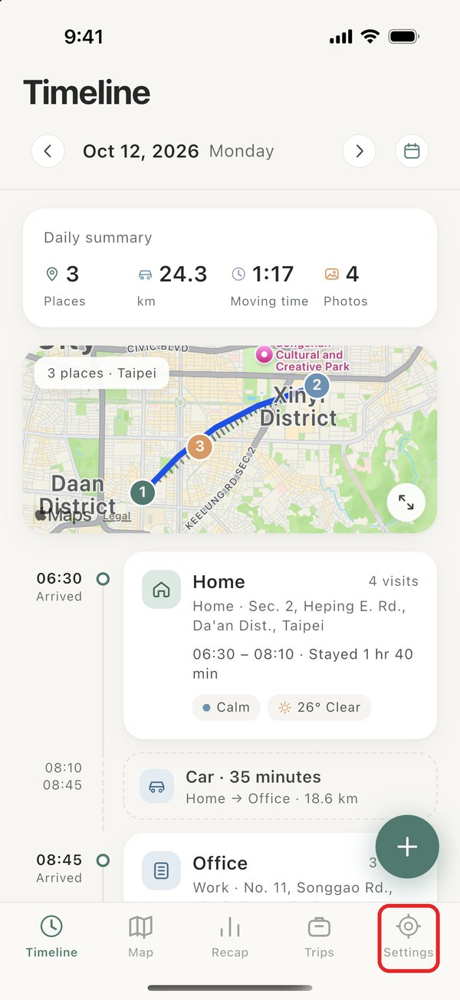
画面のいちばん下、右端にある「設定」タブをタップします。画面中央の「設定を開く」ボタンをタップしても、同じ場所に移動します。
-
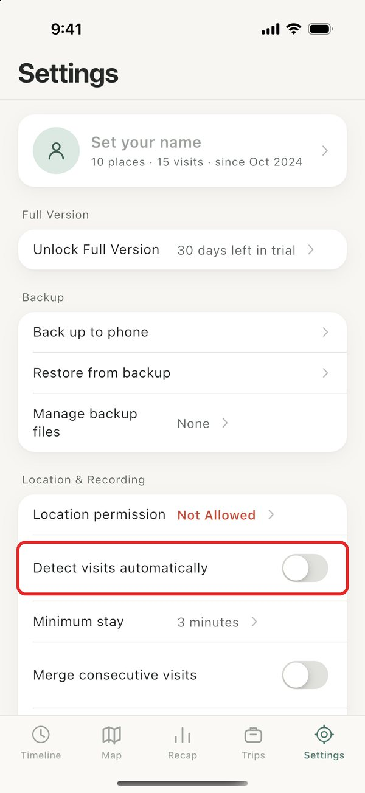
下にスクロールして「位置情報と記録」のセクションを表示し、「訪問を自動で記録」の右にあるスイッチをオンにします。
-
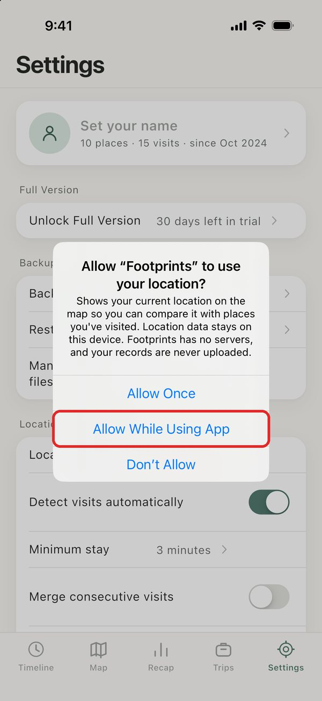
システムの確認ダイアログが表示されるので、まず「アプリの使用中は許可」をタップします。iPhone では、アプリが最初から「常に」を求めることはできません。そのため2段階に分かれていて、次の手順で「常に」に変更します。
-
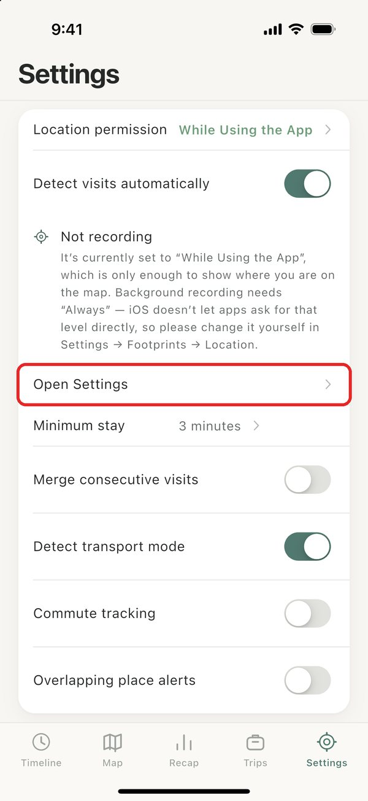
アプリに戻ると「現在は記録していません」という案内が表示されます。そのすぐ下にある「設定を開く」をタップします。
-
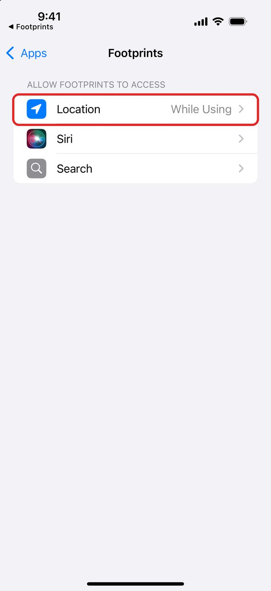
iPhone の設定画面で「位置情報」をタップします。
-
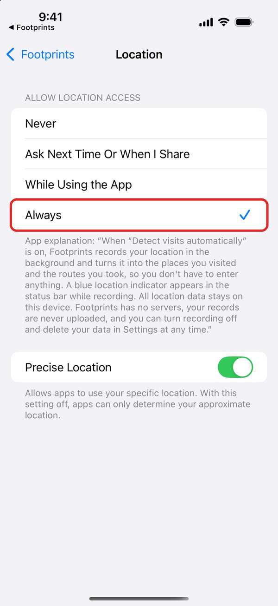
「常に」を選び、Footprints に戻ります。「常に」を選んだときだけ、iPhone をポケットに入れている間も行った場所を記録できます。
-
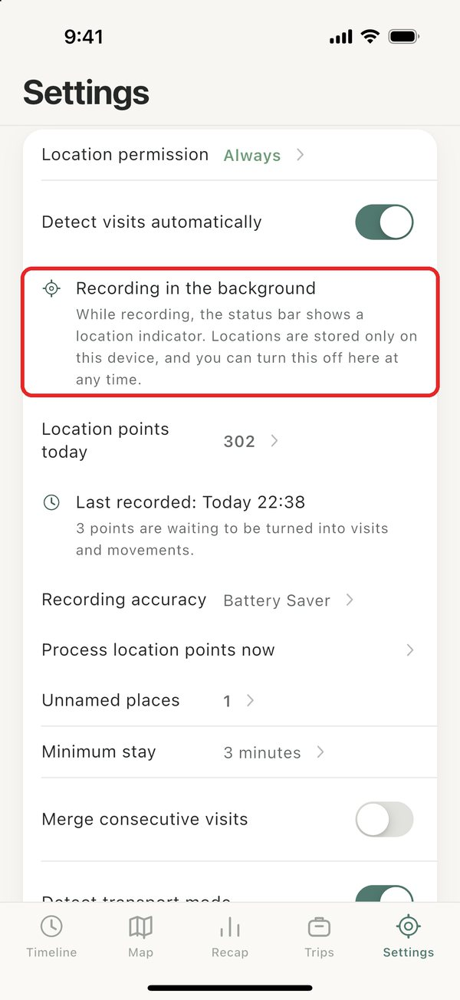
「バックグラウンドで記録中」と表示されたら完了です！あとはいつもどおり過ごすだけで、記録が自動で「タイムライン」に並びます。記録中は、iPhone の画面上部に青い位置情報インジケータが表示されます。これは正常な動作です。
ヒント：バッテリーをもっと節約したいときや、ルートをもっと細かく残したいときは、同じセクションの「記録の精度」をタップして「省電力」または「高精度」を選べます。記録を止めたいときは「訪問を自動で記録」をオフにするだけです。すでに記録されたデータは削除されません。
【「タイムライン」で1日の足あとを見る】
こんなときに：今日、昨日、またはある日に、どこへ行ってどのくらい滞在したかを振り返りたいとき。
-
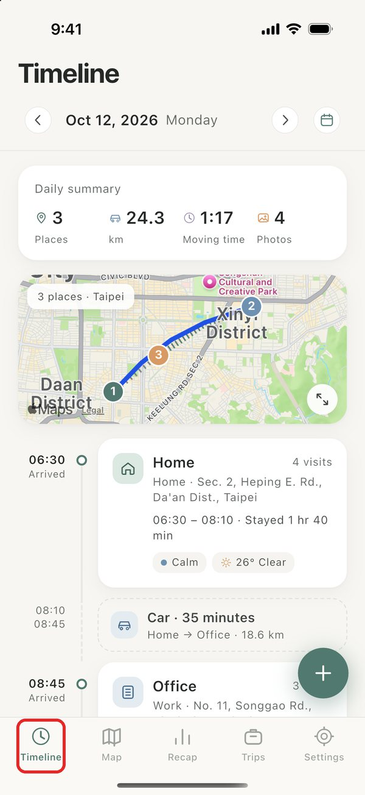
画面のいちばん下、左端にある「タイムライン」タブをタップすると、今日の記録が表示されます。上から順に、「1日のまとめ」、その日の小さな地図、時刻順に並んだ訪問と移動の記録です。
-
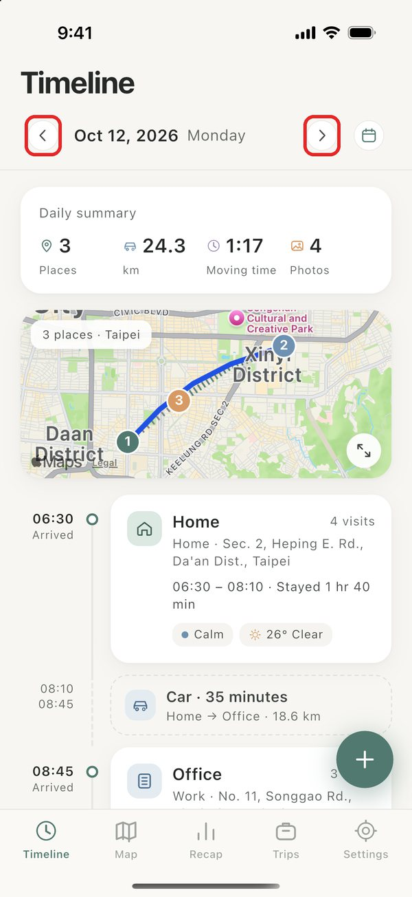
日付の左にある「‹」をタップすると前の日、右にある「›」をタップすると次の日を表示します。
-
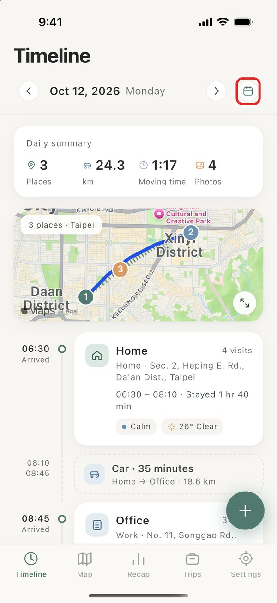
特定の日に直接移動したいときは、日付バーの右にあるカレンダーアイコンをタップし、表示されたカレンダーで日付を選びます。
-
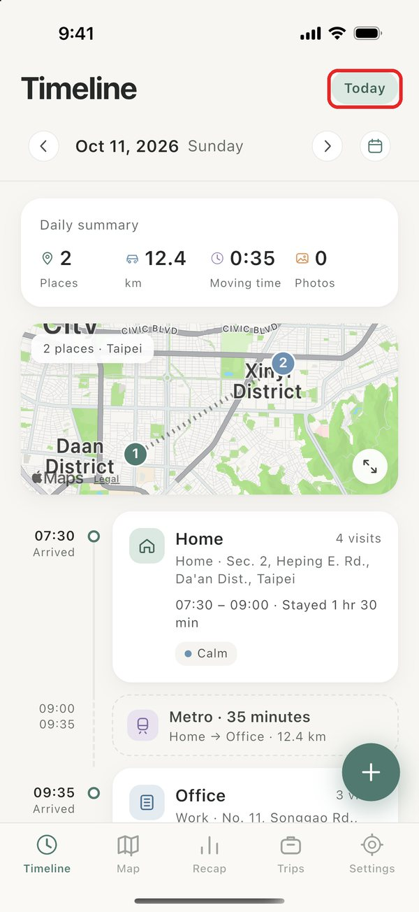
見終わったら、右上の「今日に戻る」ボタンをタップすると今日に戻れます。このボタンは、今日以外の日を表示しているときだけ表示されます。
-
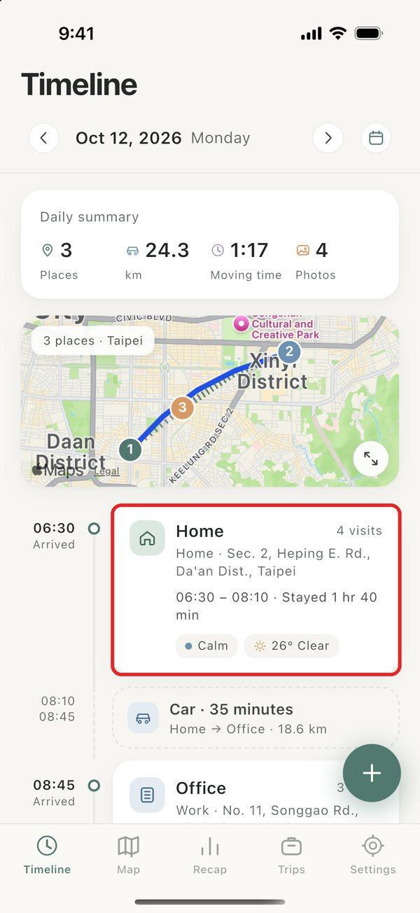
訪問カードをタップすると、その場所の詳細ページが開き、これまでに何回訪れたか、合計でどのくらい滞在したかを確認できます。
-
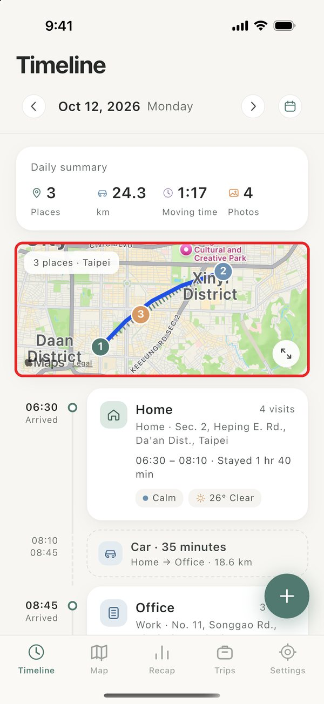
小さな地図をタップすると「足あと」タブに移動し、その日のルートを大きな地図で見られます。
【記録を手動で追加・修正する】
こんなときに：iPhone を持って出るのを忘れた日の記録をあとから足したいとき。自動で記録された時刻や場所が少し違っていて、自分で直したいとき。ついでに日記を書いたり、写真を追加したりもできます。
-
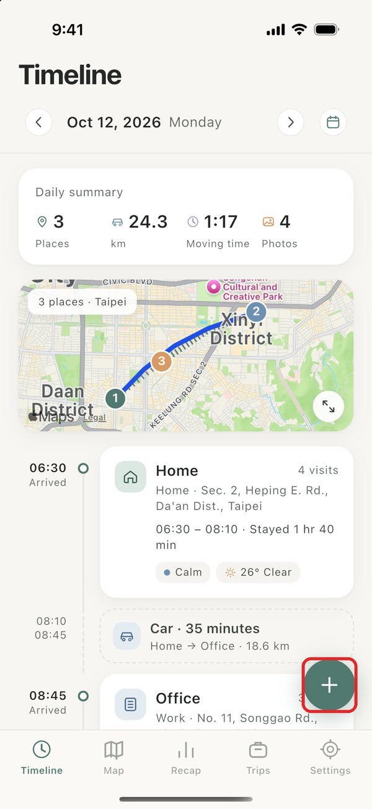
「タイムライン」タブで、画面右下の「＋」ボタンをタップします。
-
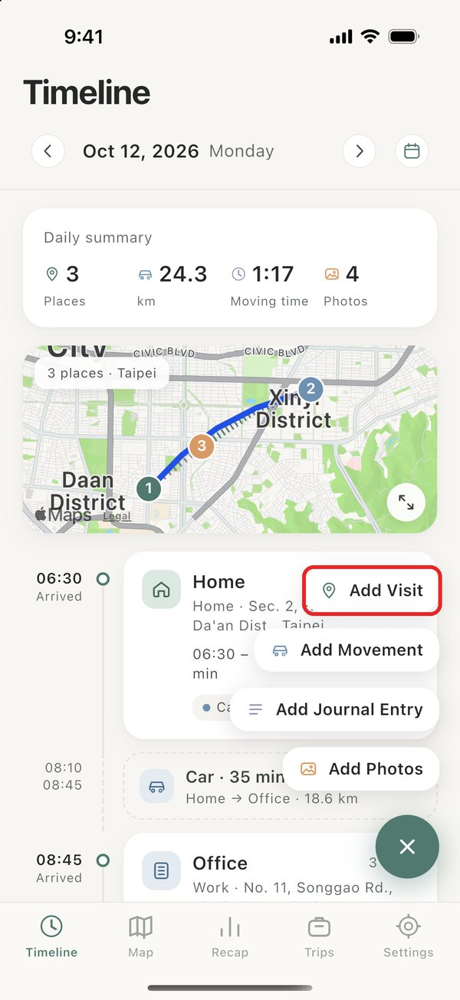
開いたメニューで「訪問を追加」をタップします。ほかの3つの項目：「移動を追加」は移動を1件追加、「日記を追加」はひとこと書き残す、「写真を追加」はその日の訪問のどれかに写真を追加します。
-
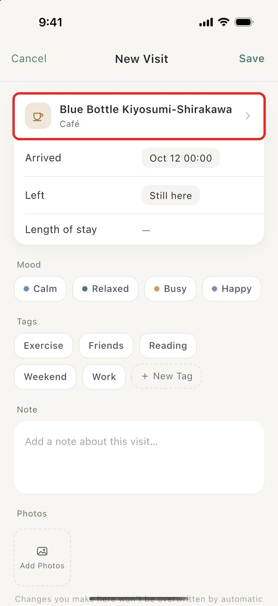
いちばん上の場所の欄をタップして、訪れた場所を選びます。
-
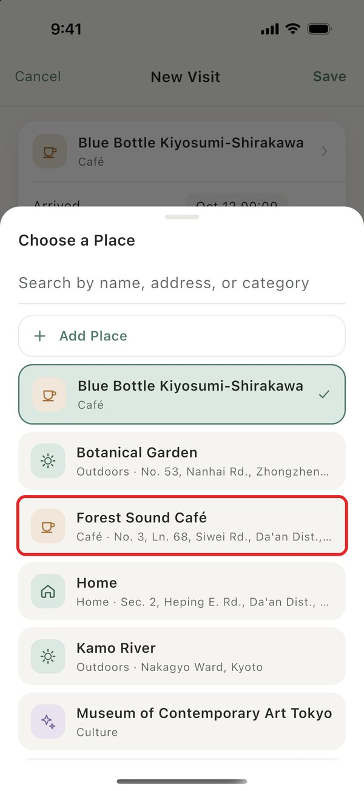
「場所を選択」パネルで場所をタップして選びます。一覧に見つからないときは、「場所を追加」をタップすればその場で新しい場所を作成できます。
-
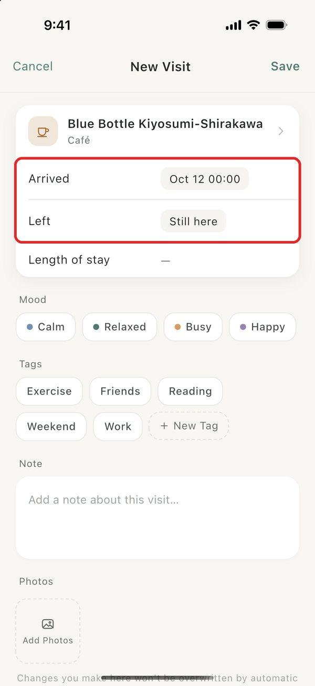
「到着」と「出発」の右にある時刻をそれぞれタップして、正しい時刻に合わせます。
-
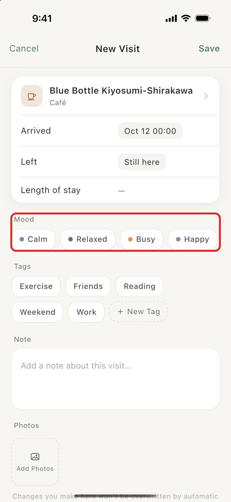
もっと残しておきたいときは、「気分」を選んだり、「タグ」を付けたり、「メモ」にひとこと書いたり、「写真を追加」をタップしたりできます。どれも入力しなくてもかまいません。
-
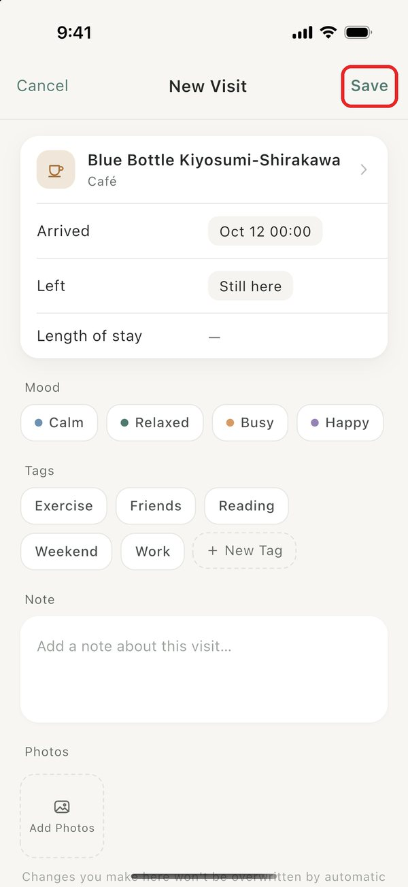
右上の「保存」ボタンをタップします。「訪問を追加しました」と表示されたら完了です。
-
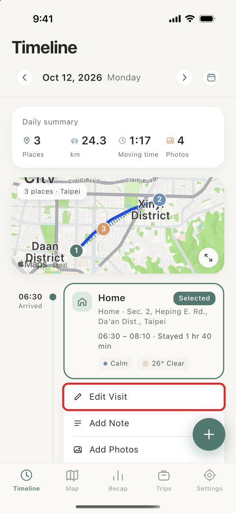
すでにある記録を修正したいとき：「タイムライン」でその訪問カードを長押しし、「訪問を編集」をタップします。修正が終わったら、同じように「保存」をタップします。削除したいときは、「この訪問を削除」をタップして確認します。削除すると元に戻せませんので、ご注意ください。
ヒント：手動で修正した内容は、自動記録で上書きされることはありません。安心して修正してください。移動と日記は、タップするだけで編集画面が開きます。
【「足あと」の地図で行った場所を見る】
こんなときに：今月や今年、どこを歩いたかを地図で見たいとき。あるお店にいつ行ったかを調べたいとき。
-
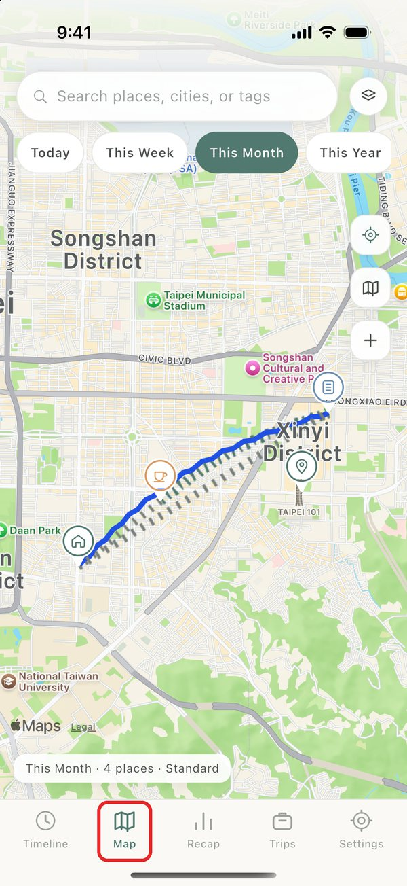
画面のいちばん下にある「足あと」タブをタップして、地図を開きます。
-
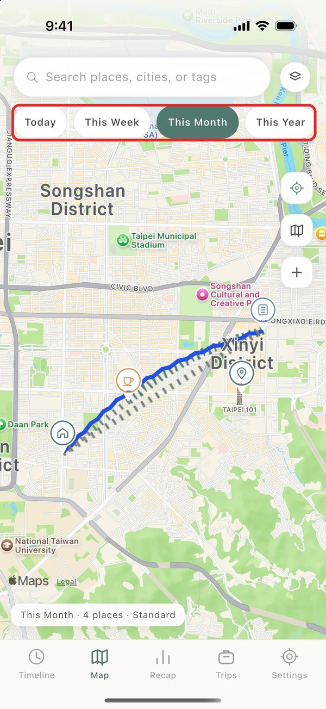
「今日」「今週」「今月」「今年」のいずれかをタップして、足あとを表示する期間を切り替えます。「カスタム」をタップすると開始日と終了日を自分で選べます。選んだら「適用」をタップします。
-
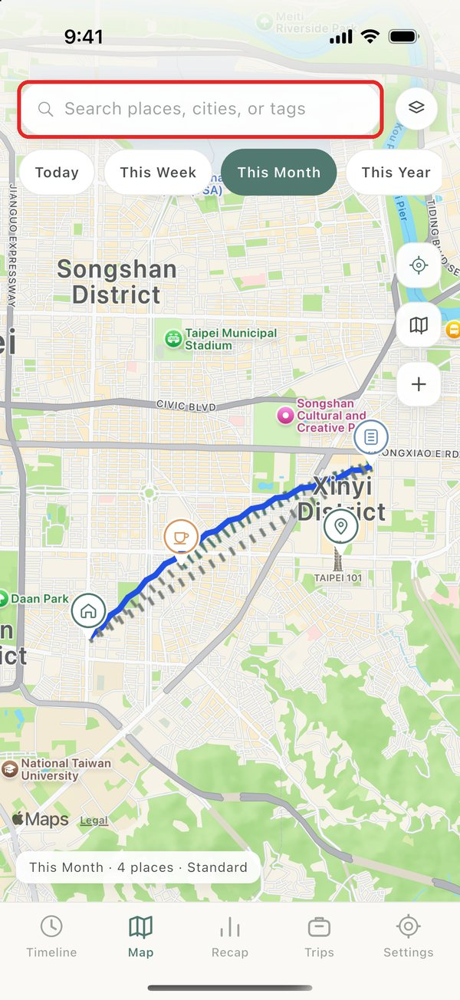
特定の場所を探したいときは、いちばん上の検索ボックスをタップして、場所の名前、都市、タグを入力します。
-
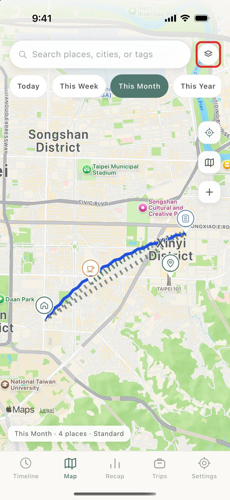
検索ボックスの右にあるアイコンのボタンをタップして、「絞り込み」パネルを開きます。
-
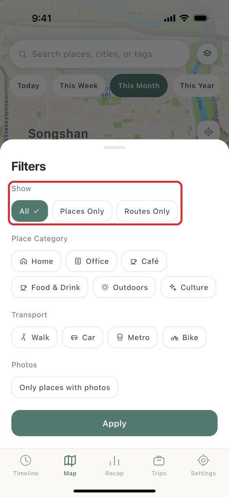
「絞り込み」パネルで、見たい内容を選びます。たとえば「場所のみ」や、いくつかの「場所のカテゴリ」などです。選び終えたら、いちばん下の「適用」をタップします。
-
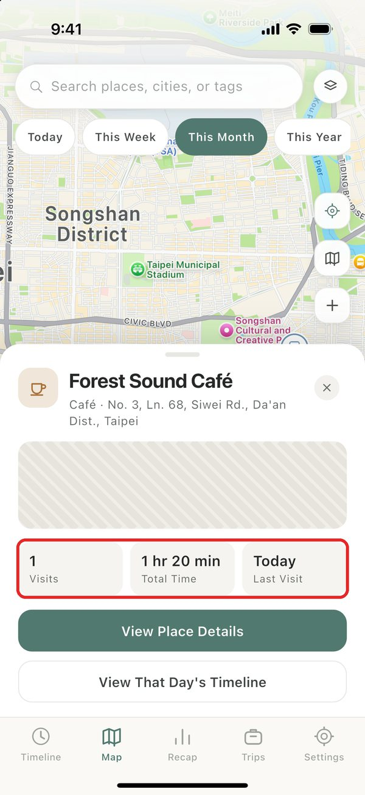
地図上のマーカーをタップすると、下からその場所の小さなカードが出てきて、何回訪れたか、合計でどのくらい滞在したかがわかります。
-
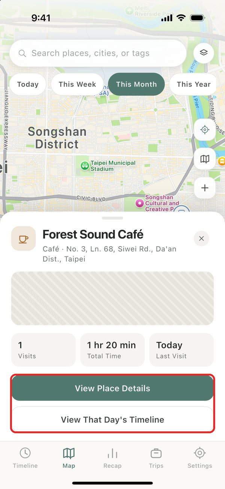
「場所の詳細を見る」をタップするとこの場所のすべての訪問を確認でき、「その日のタイムラインを見る」をタップするとその日の記録に移動します。カードを上に引き上げると、最近の訪問や写真も見られます。
-
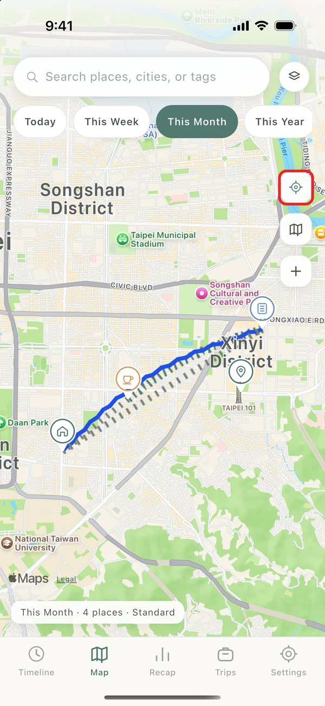
右側のいちばん上にある現在地ボタンをタップすると、地図が今いる場所に移動し、青い点が表示されます。真ん中のボタンは「地図のレイヤー」で、「航空写真」などの表示に切り替えられます。
【場所を追加・整理する】
こんなときに：自動記録で新しい場所が見つかったけれど名前が付いていないとき。同じお店が2つの場所として記録されてしまったとき。先に「自宅」や「職場」を作っておきたいとき。
-
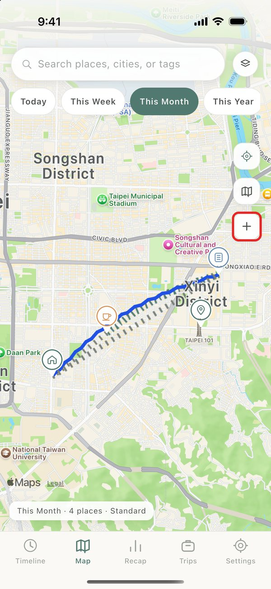
「足あと」タブで、追加したい位置まで地図を動かし、右側の「＋」ボタンをタップします。地図上のその位置を直接長押しすることもできます。
-
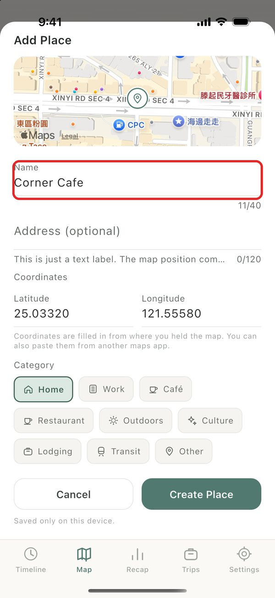
「名前」の欄に、場所の名前を入力します。たとえば「自宅」や「角のカフェ」などです。座標は自動で入力されているので、自分で入力する必要はありません。
-
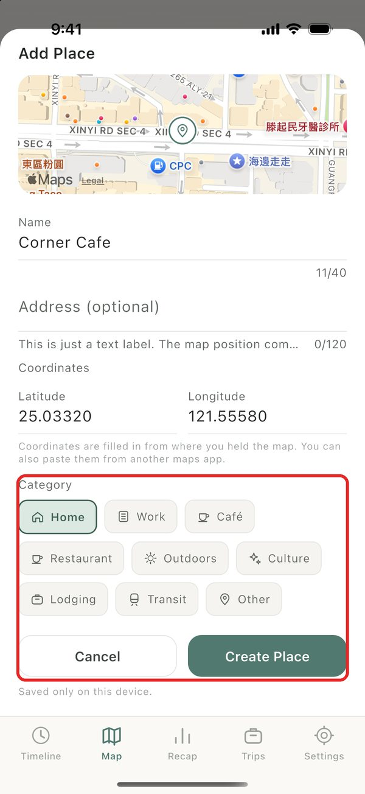
「カテゴリ」をひとつ選び、「場所を作成」をタップします。これで地図にその場所が表示されます。
-
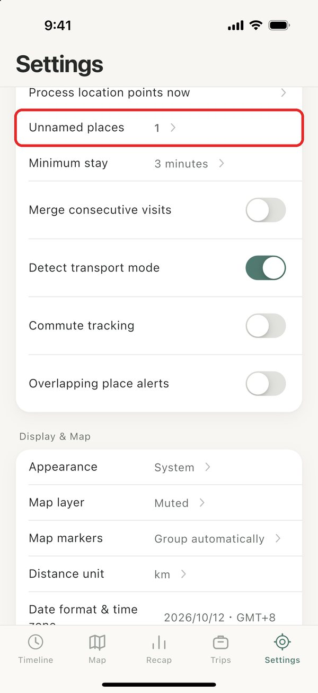
自動で見つかった場所に名前を付ける：「設定」タブを開き、「位置情報と記録」のセクションで「名前のない場所」をタップします。
-
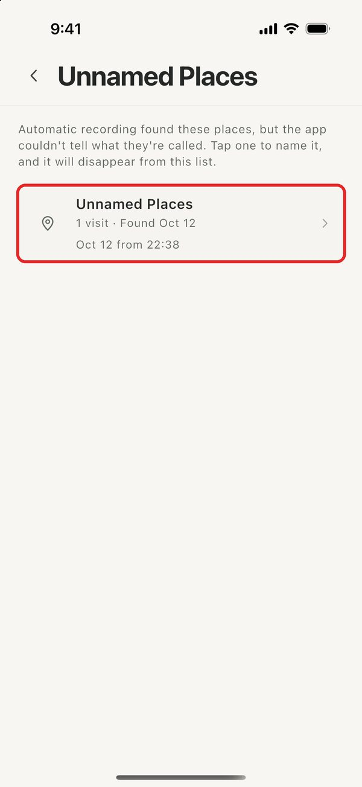
場所をひとつタップし、名前を入力して保存します。名前を付けた場所は、この一覧から消えます。
-
重複した場所をひとつにまとめる：「設定」の「位置情報と記録」のセクションで「重複の可能性がある場所」をタップします。この行は、「重複した場所の通知」をオンにしていて、実際に重複していそうな場所があるときだけ表示されます。
-
同じ場所に見える組をタップします。
-
「どちらを残しますか？」パネルで、残したいほうをタップします。両方の訪問記録はそのまま残り、ひとつの場所にまとめられます。実際には別々の場所だった場合は、「別々の場所です」をタップしてください。今後、その組は通知されなくなります。
【「旅行」を作成・整理する】
こんなときに：海外旅行やお出かけから帰ってきて、その数日間の足あとや写真、感想を1冊の旅行日記にまとめたいとき。
-
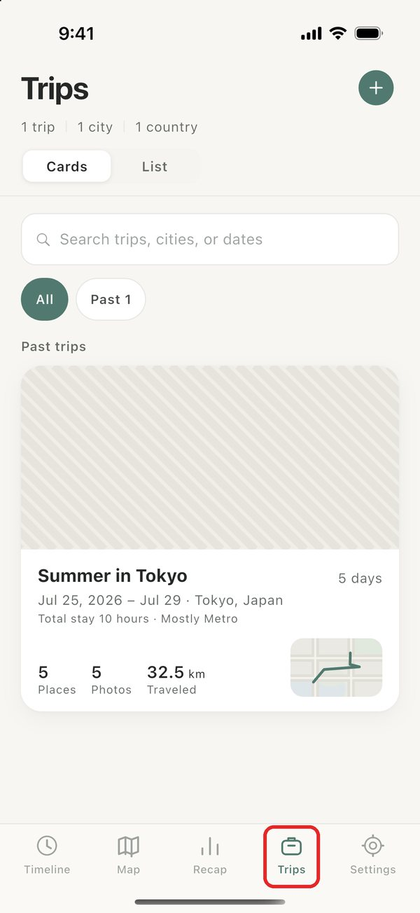
画面のいちばん下にある「旅行」タブをタップします。
-
「この数日を旅行にまとめますか？」の提案カードが表示されていたら、そのまま「旅行を作成」をタップするのがいちばん簡単です。この提案が不要なときは、「スキップ」をタップします。
-
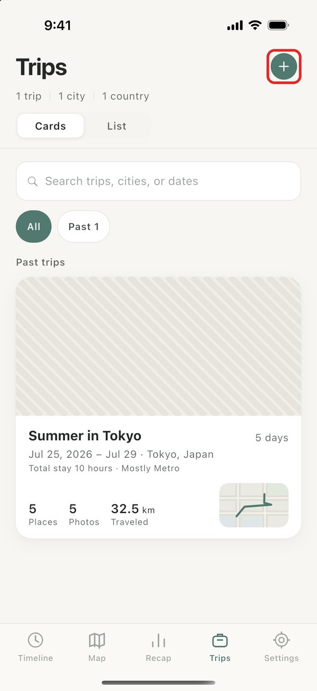
提案カードがないときや、最初から自分で作りたいときは、右上の「＋」ボタンをタップします。
-
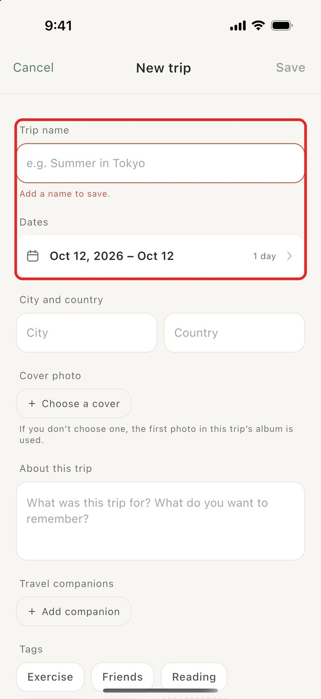
「旅行名」を入力し、「日付」をタップして出発日と帰ってきた日を選びます。名前を入力しないと保存できません。
-
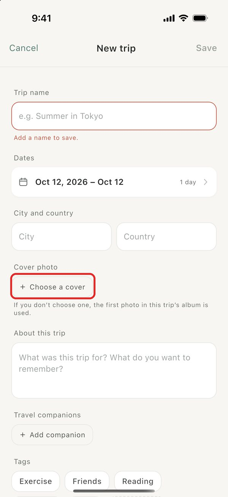
旅行をもっと充実させたいときは、「カバーを選ぶ」をタップしたり、「同行者」や「タグ」を追加したりできます。どれもあとから追加できます。
-
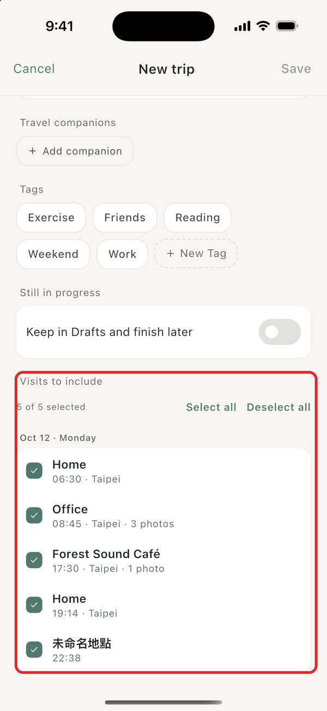
「含める記録」のセクションで、この旅行に入れたい訪問記録にチェックを付けます。「すべて選択」をタップしてもかまいません。
-
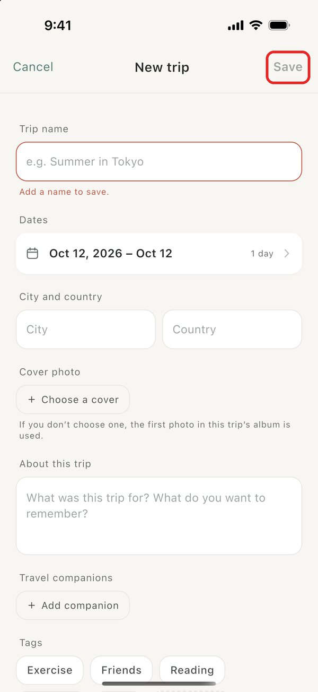
「保存」をタップします。「旅行を作成しました」と表示されたら完了です。まだ整理が終わっていないときは、「「下書き」に入れて、あとで仕上げる」のスイッチをオンにしておけます。
-
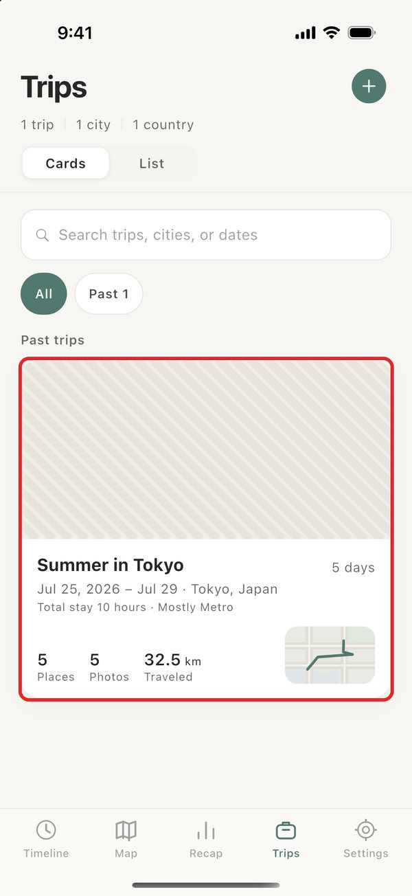
「旅行」タブに戻り、作成したばかりの旅行カードをタップすると、日ごとにどこへ行ったかを見られます。
-
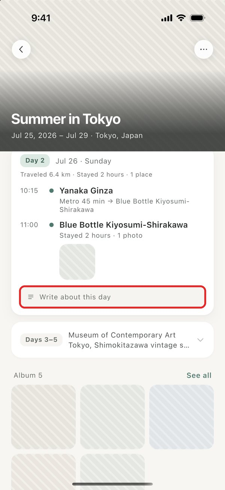
その日のカードの下にある「この日のことを書く」をタップすると、その日の「特別なこと」や気分、感想を書き残せます。
-
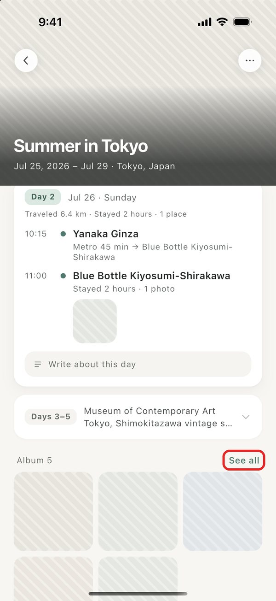
「アルバム」のセクションで「すべて表示」をタップすると、すべての写真を見られます。「写真を追加」でさらに写真を入れることもできます。写真を長押しすると、「カバーに設定」したり、「この旅行から外す」ことができます（写真自体は削除されません）。
-
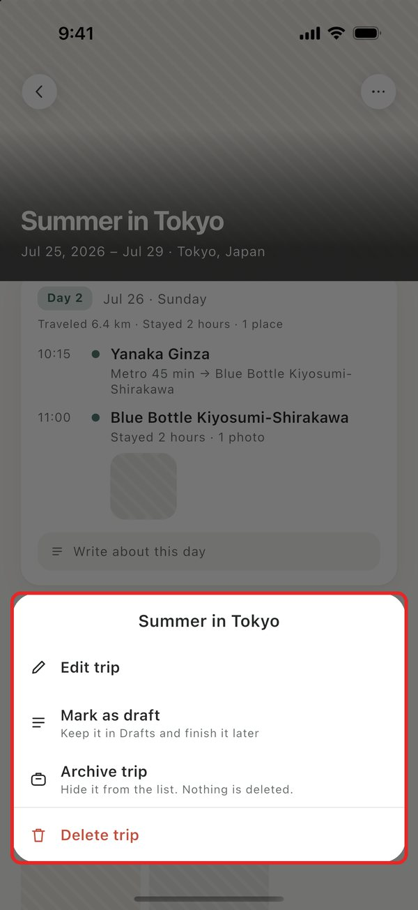
右上の「⋯」ボタンをタップすると、「旅行を編集」「下書きにする」「旅行をアーカイブ」「旅行を削除」を選べます。旅行を削除しても、消えるのはまとめた内容だけです。訪問記録と写真はそのまま残ります。
【「振り返り」で統計を見る】
こんなときに：今月いちばんよく行った場所、合計の移動距離、通勤にかかった時間が気になるとき。
-
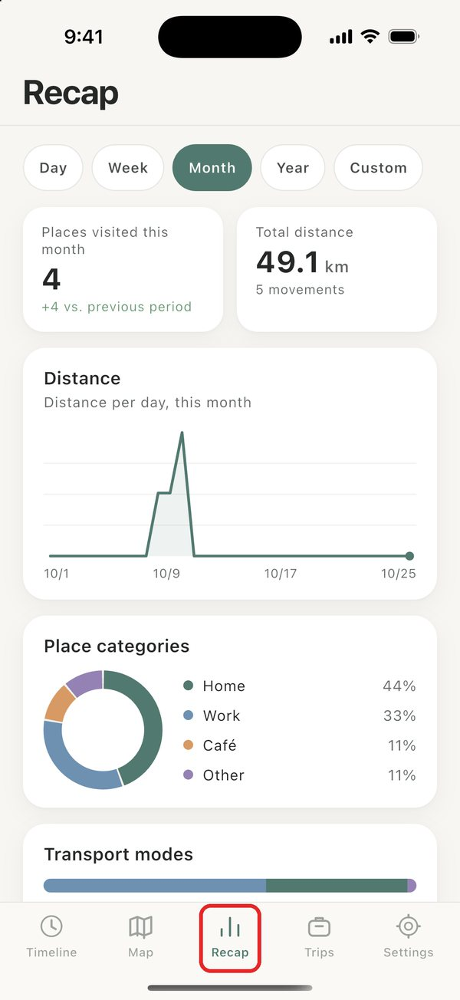
画面のいちばん下、真ん中にある「振り返り」タブをタップします。
-
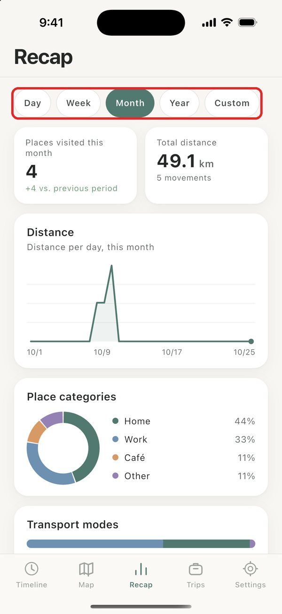
「日」「週」「月」「年」のいずれかをタップして、集計する期間を切り替えます。「カスタム」をタップすると、期間を自分で選べます。
-
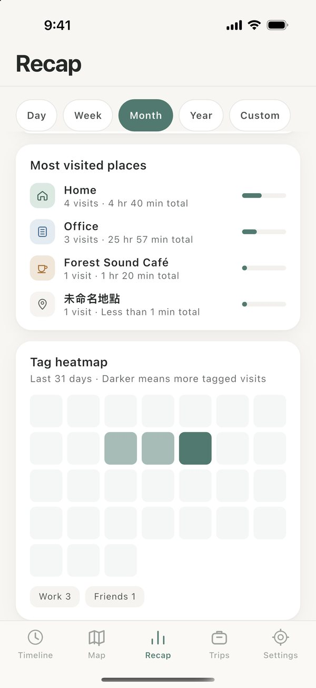
下にスクロールして、グラフを1枚ずつ見ていきます。どのくらい移動したか、よく行く場所、よく使う移動手段、気分の変化などがわかります。
-
通勤時間を見たいとき：「通勤時間」カードをタップすると、そのまま「設定」に移動します。
-
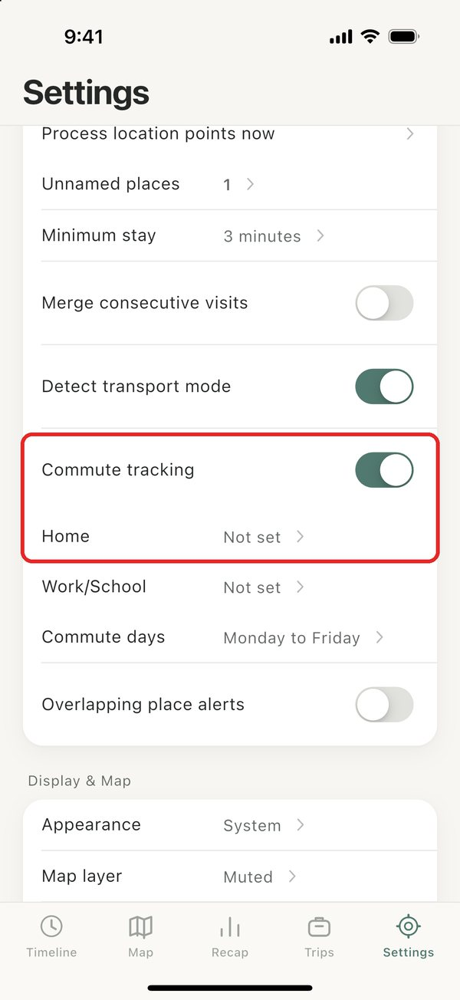
「通勤の記録」のスイッチをオンにし、続けて下に表示される「自宅」をタップします。
-
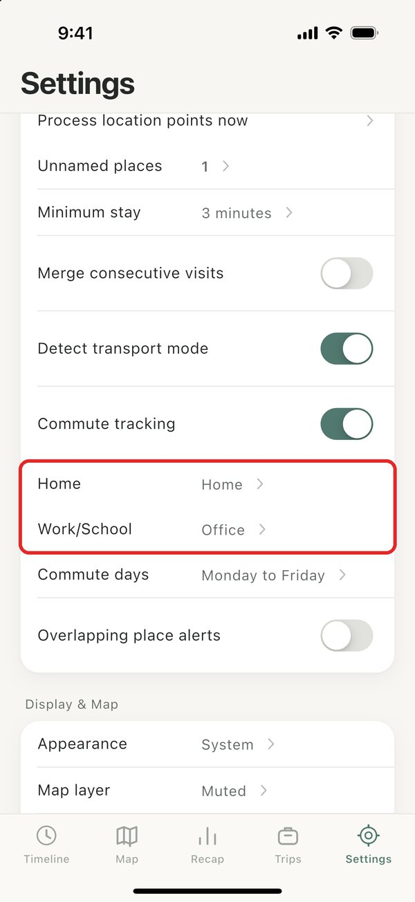
一覧からあなたの自宅をタップして選びます。同じ方法で「職場／学校」をタップして場所を選びます。一覧にないときは、先に機能 5 の手順で場所を作成してください。「通勤日」では、通勤として数える曜日を選べます。
-
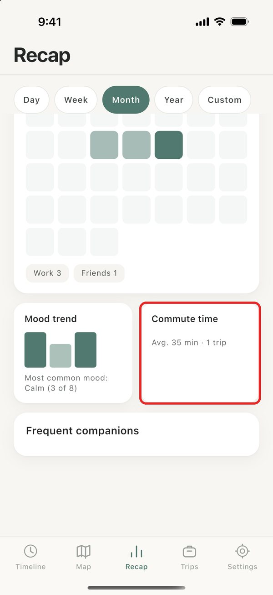
「振り返り」タブに戻ると、「通勤時間」カードに通勤1回ごとの所要時間が表示されます。
【バックアップと復元】
こんなときに：機種変更の前や、アプリを入れ直す前。あるいは、大切な思い出の控えを残しておきたいとき。データはこの iPhone にだけ保存されているので、定期的なバックアップをおすすめします。
-
「設定」タブを開き、「バックアップ」のセクションで「端末にバックアップ」をタップします。
-
「写真なし」または「写真あり」を選びます。機種変更のときは「写真あり」がおすすめです。復元したときに写真も一緒に戻ります。
-
「バックアップを作成」をタップし、「作成中…」が終わるのを待ちます。「Footprints フォルダに保存しました」と表示されたら、バックアップは完了です。
-
続けて「バックアップファイルの管理」をタップし、バックアップを iPhone 以外の場所に移します。
-
バックアップの右にある共有アイコンをタップして、ファイルを iCloud Drive に保存したり、AirDrop でパソコンに送ったり、自分宛てに送ったりします。この手順はとても大切です。バックアップファイルは、そのままではこの iPhone の中にしかありません。iPhone をなくしたり、アプリを削除したりすると、一緒に消えてしまいます。
-
復元するとき：「設定」の「バックアップ」のセクションで「バックアップから復元」をタップします。
-
ファイル選択画面で、Footprints のバックアップファイルを探してタップします。
-
日付と件数が正しいことを確認してから、「復元」をタップします。「○件の記録を復元しました」と表示されたら完了です。
ご注意：復元すると、iPhone にある現在のデータは「すべて置き換え」られます。両方を合わせるわけではありません。iPhone にすでに新しい記録がある場合は、先にその分のバックアップを別に作成してください。
【フル版のロック解除と購入の復元】
こんなときに：30日間の無料トライアルがもうすぐ終わるので、自動記録を続けたいとき。機種変更やアプリの再インストールのあと、購入済みのフル版を元に戻したいとき。
-
「設定」タブを開き、「フル版」のセクションで「フル版のロックを解除」をタップします。トライアルの終了が近づくと、画面の上部にもお知らせが表示されます。お知らせにある「ロック解除」をタップしても、同じ画面に移動します。
-
説明を読んだら、画面上部の「○○でロック解除（買い切り）」ボタンをタップします。実際の金額は、画面に表示されているものが正しい金額です。一度きりのお支払いで、サブスクリプションではなく、自動更新もありません。
-
iPhone の案内に従って支払いを確認します（サイドボタンをダブルクリックするか、Face ID／Touch ID を使います）。
-
「フル版のロックが解除されています」と表示されたら完了です。自動記録はそのまま続きます。
-
以前に購入していて、機種変更やアプリの再インストールをしたとき：同じ画面のいちばん下にある「購入を復元」をタップします。もう一度支払う必要はありません。iPhone に、購入時と同じ Apple ID でサインインしていることを確認してください。
ヒント：「購入を復元」で戻るのはロック解除の状態だけで、記録は戻りません。記録は、機能 8 のバックアップと復元を使って移してください。
【外観と表示方法を変更する】
こんなときに：画面をダークに切り替えたいとき、距離をマイルで表示したいとき、地図の見た目を変えたいとき。
-
「設定」タブを開き、下にスクロールして「表示とマップ」のセクションで「外観」をタップします。
-
「システムに合わせる」「ライト」「ダーク」のいずれかを選ぶと、画面がすぐに切り替わります。
-
「距離の単位」をタップすると、「km」と「マイル」を切り替えられます。
-
「マップのマーカー表示」をタップして、地図上のマーカーの表示方法を選びます。場所が多いときは、「自動でまとめる」にすると近くのマーカーがひとつにまとまり、すっきり見やすくなります。
-
「設定」のいちばん上にあるカードをタップすると、「あなたの名前」を入力できます。名前はこの iPhone にだけ表示され、アップロードされません。
よくある質問
Q1：位置情報のデータはアップロードされますか？
いいえ。Footprints にはアカウントもクラウド同期もなく、記録はこの iPhone にだけ保存されます。データが iPhone の外に出るのは、ご自身で「端末にバックアップ」をタップし、そのファイルを共有したときだけです。さらに詳しい説明は、アプリの「設定」→「ヘルプとよくある質問」、またはプライバシーポリシーでご覧いただけます。
Q2：「タイムライン」に記録が自動で表示されないのはなぜですか？
次の3点を順番にご確認ください。
① 「設定」→「位置情報と記録」→「訪問を自動で記録」がオンになっているか。
② 位置情報の許可が「常に」になっているか。「このアプリの使用中」の場合、iPhone をしまうと記録できなくなります。機能 1 の手順 4～6 に沿って変更してください。
③ 「設定」に、長い間新しい位置情報がないと表示されている場合は、「記録を再開」をタップします。
なお、同じ場所にずっといて動いていないときは、もともと新しい記録は増えません。これは正常な動作です。また、無料トライアルの終了後にロックを解除していない場合も、自動記録は停止します。
Q3：機種変更のとき、データはどうやって移せばよいですか？
2つに分けて行います。記録はバックアップで移します。古い iPhone で機能 8 の手順に沿って「写真あり」のバックアップを作成して外に出し、新しい iPhone で「バックアップから復元」を使って読み込みます。フル版は「購入を復元」で元に戻します（機能 9）。同じ Apple ID であれば、もう一度支払う必要はありません。両方が済めば、新しい iPhone は古い iPhone と同じ状態になります。
Q4：無料トライアルが終わったあとも、それまでの記録は見られますか？
はい、見られます。トライアル終了後にロックを解除していない場合、自動記録は停止し、記録の追加や修正もできなくなります。ただし、これまでに記録したものはすべて残っていて、いつでも閲覧、バックアップ、書き出し、削除ができます。ロックを解除すると、記録が再開されます。
Q5：自動で記録された場所や時刻が違っているときは、どうすればよいですか？
ご自身で修正できます。「タイムライン」でその訪問を長押しし、「訪問を編集」をタップすると、場所を変えたり、時刻を調整したりできます（機能 3）。隣り合った2つのお店が同じ場所として記録されている場合は、編集中に場所の欄 →「場所を追加」をタップすると、その訪問を新しい場所に付け替えられます。少し通りかかっただけで記録が増えてしまうことが多い場合は、「設定」→「位置情報と記録」で「最短滞在時間」を長めに設定してみてください。